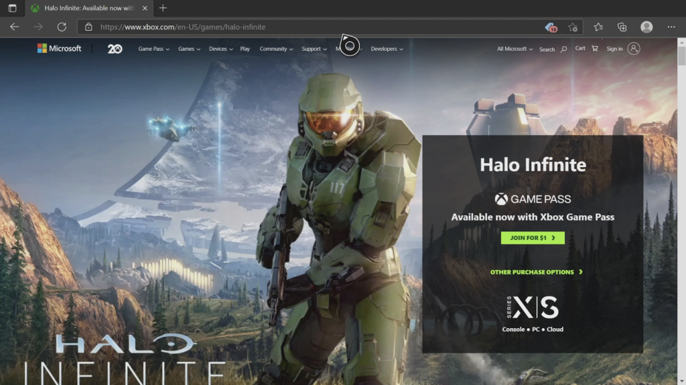
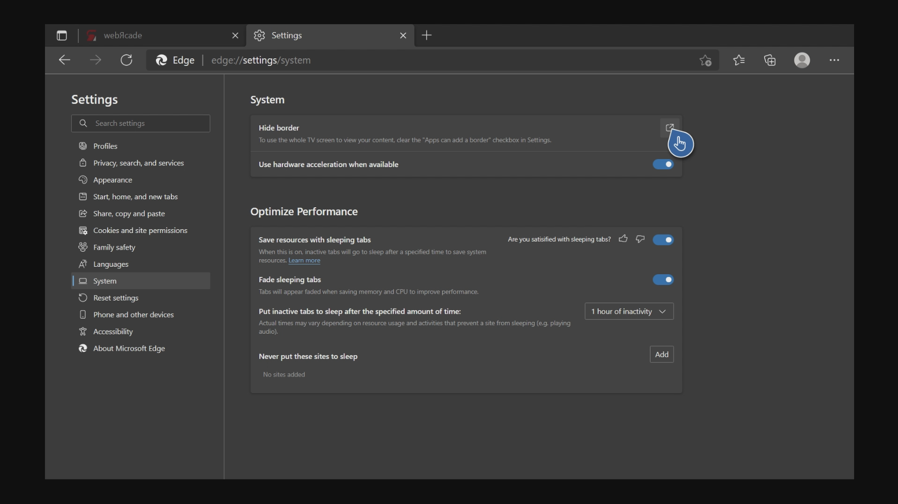
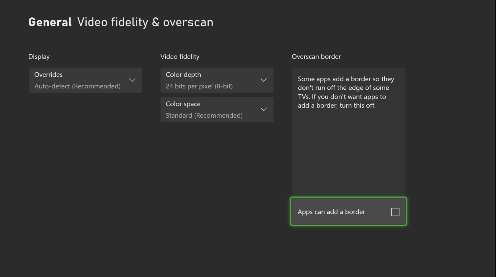
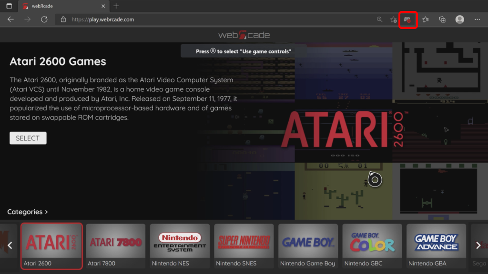
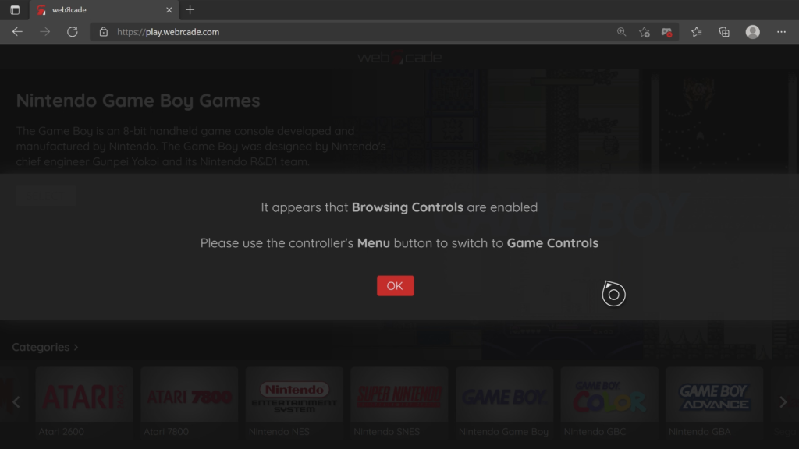
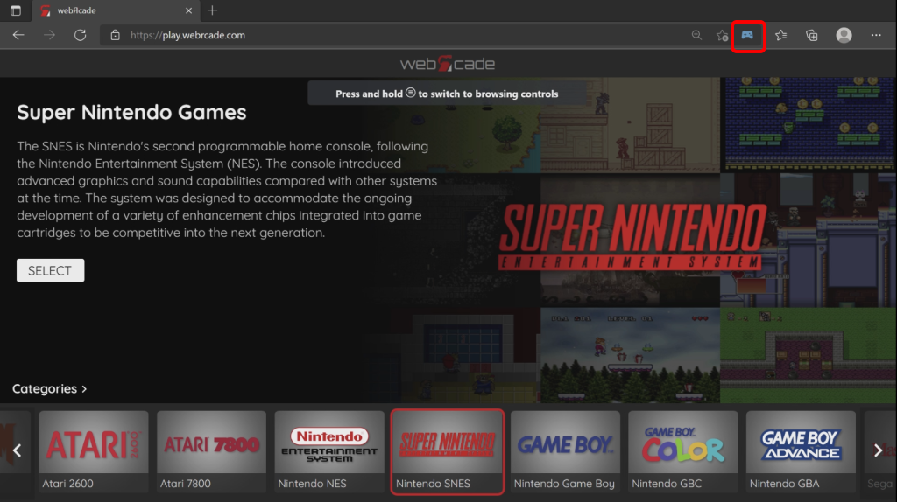
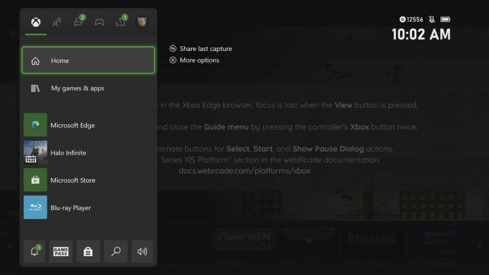

Xbox Series X|S
Overview
This page provides information on how to obtain the optimal experience when using webЯcade with the Xbox Series X|S game consoles.
It is important to note that while webЯcade is fully functional on previous generations of Xbox One consoles, there will most likely be performance issues.
Note
The Xbox Series X|S Edge browser was recently updated to use Blink as its browser engine (part of Chromium). As this is a very recent change, several defects have been detected and reported (see View button defect, below). This page will be updated to reflect newly reported bugs and if previous defects have been resolved.
Browser Support
The recommended browser for use with webЯcade on Xbox Series X|S consoles is Microsoft Edge which is based on the Blink browser engine. There are other browsers available on the Xbox, but they all appear to use the EdgeHTML browser core which is less performant.
Launching webЯcade
To launch webЯcade, perform the following steps:
- Press the
Xboxbutton on the controller to open the guide on the left side of the screen. - Select the
"My games and apps"option. - Select the
"See all"option. - A screen similar to the one shown below should be displayed.

- Select the
"Apps"category on the left. - Select the
"Microsoft Edge"application.

- The
"Microsoft Edge"browser should be launched and appear similar to the screen above.

Prior to navigating to webЯcade, it is critical to ensure that Microsoft Edge does not have borders enabled. It is not clear why, but having borders enabled causes significant performance issues.
To check whether borders are enabled, perform the following steps:
- Click the more options icon () on the right side of the navigation bar (see screen above).
- Then, click the Settings icon () (see screen above).

- Click the System icon () within the left navigation bar (see screen above).
- Click the Link icon () on the right side of the Hide border group within the System settings section (see screen above).

- Ensure that the Apps can add a border checkbox is disabled within the Overscan border section (or uncheck if currently enabled) (see screen above).
- Press the
Bbutton twice to return to the Microsoft Edge browser.
- At this point, we can go ahead and launch webЯcade.
- Use the left analog stick to navigate to the address bar (see screen above).
- Once the address is highlighted, press the
Abutton.

- At this point the text entry screen should be displayed (see screen above).
- Enter the following address:
"play.webrcade.com"

- At this point, the webЯcade player should be displayed (see screen above).
- Unfortunately, at the time of this writing, the Edge browser defaults to
Browsing Controlsmode (versusGame Controlsmode) when webЯcade is loaded.- The current mode can be confirmed by examining the controller icon in the navigation bar (highlighted in red in the screen above). If a red
Xis shown in the bottom-right portion of the controller, the page is currently inBrowsing Controlsmode.
- The current mode can be confirmed by examining the controller icon in the navigation bar (highlighted in red in the screen above). If a red

- WebЯcade continually examines gamepad inputs and attempts to detect when the page is operating in
Browsing Controlsmode. If it determines the page is inBrowsing Controlsmode, the message shown in the screen above will be displayed, prompting for a switch toGame Controlsmode.

- To switch to
Game ControlsfromBrowsing Controlsmode, hold down on theMenubutton until the context menu is displayed. At that point use the left analog stick to hover over theUse game controlsoption and then press theAbutton (see screen above).

- At this point, the controller icon in the navigation bar (highlighted in red in the screen above) should be light blue in color without the red
X, indicating that the page is inGame Controlsmode.
Alternate controls
Due to defects (see View button defect, below) present in the recently introduced Blink-based Microsoft Edge browser for the Xbox Series X|S, the following alternate inputs are highly-recommended to trigger the Start, Select, and Show Pause Screen actions.
| Name | Gamepad |
Comments |
|---|---|---|
| Start |  and and  |
Hold down the Right Trigger and click (press down) on the Right Thumbstick. |
| Select | and  |
Hold down the Right Trigger and click (press down) on the Left Thumbstick. |
| Show Pause Screen |
 and and |
Hold down the Left Trigger and click (press down) on the Left Thumbstick. |
| Show Pause Screen (Alternate) |
and |
Hold down the Left Trigger and click (press down) on the Right Thumbstick. |
Game and Browsing Controls
The Microsoft Edge browser for Xbox supports two distinct control modes, Game Controls and Browsing Controls. Game mode is used when navigating the webЯcade player (front-end) or playing games. The Browsing mode can be used to access the navigation bar at the top (address, settings, etc.).
To switch to Game Controls from Browsing Controls mode, hold down on the Menu button until the context menu is displayed. At that point use the left analog stick to hover over the Use game controls option and then press the A button (see screen above).
- At this point, the controller icon in the navigation bar (highlighted in red in the screen above) should be light blue in color without a red
X, indicating that the page is inGame Controlsmode.
Holding down the Menu button when in Game Controls mode will switch to Browsing Controls mode. The controller icon in the navigation bar will have a red X in the bottom-right portion of the controller, indicating that the page is currently in Browsing Controls mode.
Full Screen Mode
The View button can be used to toggle between "Full Screen" and "Standard" (with top navigation bar) display modes.
Hold down the View button when in standard mode to switch to full screen mode (see screen below).

Note
Due to a defect related to the view button (see View button defect, below),
the message shown in the screen above will be displayed each time the view button is pressed. This message indicates that the page has lost focus. To regain focus when this occurs, simply open and close the Guide menu (press the Xbox button on the controller).
Hold down the View button when in full screen mode to switch back to standard mode.
Troubleshooting
Unfortunately, there may be times when webЯcade ceases to work correctly within the Microsoft Edge application. The following sections describe various mechanisms that can be used in an attempt to address such issues.
View Button Defect
A defect currently exists in the recently released Microsoft Edge browser for Xbox that results in
focus being lost from the current page when the View
button is pressed. This ultimately results in the controller no longer being able to navigate the webЯcade player (front-end) or related screens.
When webЯcade detects that focus has been lost, the message shown in the screen below will be displayed. To regain focus when this occurs, simply open and close the Guide menu (press the Xbox button on the controller).
If focus has not been restored after opening and closing the guide menu, refer to the other troubleshooting methods described in this section.
Display Guide
Sometimes simply opening and closing the Guide menu (press the Xbox button on the controller) can resolve issues. For example, opening and closing the guide will typically restore focus to the page after it has been inadvertently lost (see View button defect, above).

Refresh Page
Another option is to refresh the webЯcade page. To refresh the page, perform the following steps:
- Switch to
Browsingmode (See "Game and Browsing Controls" section). - Use the left analog stick to move the cursor over the
Refreshicon in the navigation bar. - Press the
Abutton to perform the refresh.
Close and Add New Tab
There are times when refreshing the webЯcade page still does not result in proper behavior. When this occurs you can attempt the following steps:
- Switch to
Browsingmode (See "Game and Browsing Controls" section). - Use the left analog stick to move the cursor over the
xbutton on the webЯcade tab to close it. - Create a new tab with the
+button (if other tabs were present) and navigate toplay.webrcade.com.
Close and Relaunch Edge
Another option is to close the Microsoft Edge application and relaunch it. To relaunch the application, perform the following steps:
- Press the
Xboxbutton on the controller to open the guide on the left side of the screen. - Navigate and highlight the
Microsoft Edgeapplication. - Press the
Menubutton to display the context menu. - Select the
Quitoption. - Select the
Microsoft Edgeapplication and press theAbutton to launch it.
Performance Issues (Disable Borders)
It is critical to ensure that Microsoft Edge does not have borders enabled. It is not clear why, but having borders enabled causes significant performance issues.
To check whether borders are enabled, perform the following steps:
- Click the more options icon () on the right side of the navigation bar (see screen above).
- Then, click the Settings icon () (see screen above).
- Click the System icon () within the left navigation bar (see screen above).
- Click the Link icon () on the right side of the Hide border group within the System settings section (see screen above).
- Ensure that the Apps can add a border checkbox is disabled within the Overscan border section (or uncheck if currently enabled) (see screen above).